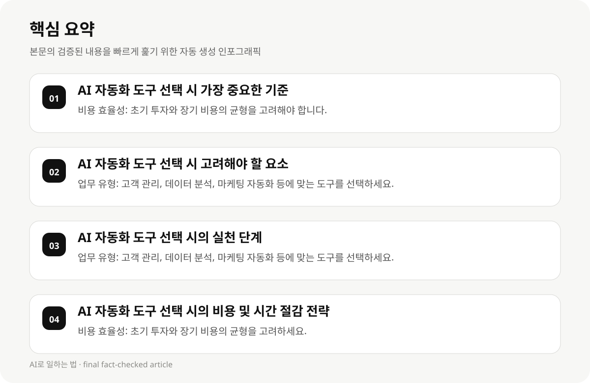

AI 자동화 도구 선택 시 가장 중요한 기준 #
소규모 비즈니스가 AI 자동화 도구를 선택할 때 가장 중요한 기준은 비용 효율성과 실용성입니다. AI 도구는 초기 비용이 높지만, 장기적으로 운영 비용이 절감되며, 업무 효율성을 높일 수 있습니다. 하지만 초기 투자와 장기 비용의 균형을 고려해야 합니다.
AI 도구의 자율성과 통합성은 선택 시 중요한 요소입니다. 자율성은 도구가 복잡한 업무를 자동화할 수 있는지, 통합성은 여러 시스템 간의 연계가 잘 되는지가 중요합니다. 예를 들어, 데이터 관리나 고객 관리 도구는 통합성과 자율성 모두 중요합니다.
데이터 보존은 소규모 비즈니스의 핵심입니다. AI 도구는 데이터를 보존하고 분석하여 의사결정을 지원해야 하며, 데이터의 정확성과 보존 기간이 중요합니다.
- 비용 효율성: 초기 투자와 장기 비용의 균형을 고려해야 합니다.
- 자율성: 도구가 복잡한 업무를 자동화할 수 있는지 확인하세요.
- 통합성: 여러 시스템 간의 연계가 잘 되는지 확인하세요.
- 데이터 보존: 데이터의 정확성과 보존 기간이 중요합니다.
AI 자동화 도구 선택 시 고려해야 할 요소 #
소규모 비즈니스가 AI 도구를 선택할 때 가장 큰 고려 요소는 업무 유형입니다. 예를 들어, 고객 관리, 데이터 분석, 마케팅 자동화 등 다양한 업무 유형에 맞는 도구를 선택해야 합니다.
도구의 사람의 검토 지원도 중요한 요소입니다. AI 도구는 자동화된 결과를 보여주기 때문에, 사람이 검토하고 조정하는 과정이 필요합니다. 이는 도구의 사용 용도와 업무 유형에 따라 달라질 수 있습니다.
AI 도구의 작업 단위당 실제 비용은 초기 투자와 장기 비용의 균형을 고려해야 합니다. 무료로 시작하는 도구는 초기 비용이 낮지만, 장기적으로 운영 비용이 높을 수 있습니다.
- 업무 유형: 고객 관리, 데이터 분석, 마케팅 자동화 등에 맞는 도구를 선택하세요.
- 사람의 검토 지원: 자동화된 결과를 보여주기 때문에, 사람이 검토하고 조정하는 과정이 필요합니다.
- 작업 단위당 실제 비용: 초기 투자와 장기 비용의 균형을 고려하세요.
AI 자동화 도구 선택 시의 실천 단계 #
AI 자동화 도구를 선택할 때는 먼저 업무 유형을 파악해야 합니다. 예를 들어, 고객 관리, 마케팅, 데이터 분석 등에 맞는 도구를 선택하세요.
도구의 자율성과 통합성을 평가해야 합니다. 자율성은 도구가 복잡한 업무를 자동화할 수 있는지, 통합성은 여러 시스템 간의 연계가 잘 되는지 확인하세요.
데이터 보존은 소규모 비즈니스의 핵심입니다. AI 도구는 데이터를 보존하고 분석하여 의사결정을 지원해야 하며, 데이터의 정확성과 보존 기간이 중요합니다.
- 업무 유형: 고객 관리, 데이터 분석, 마케팅 자동화 등에 맞는 도구를 선택하세요.
- 자율성: 도구가 복잡한 업무를 자동화할 수 있는지 확인하세요.
- 통합성: 여러 시스템 간의 연계가 잘 되는지 확인하세요.
- 데이터 보존: 데이터의 정확성과 보존 기간이 중요합니다.

AI 자동화 도구 선택 시의 비용 및 시간 절감 전략 #
AI 자동화 도구를 선택할 때는 비용 효율성과 시간 절감을 고려해야 합니다. 무료로 시작하는 도구는 초기 비용이 낮지만, 장기적으로 운영 비용이 높을 수 있습니다.
AI 도구의 작업 단위당 실제 비용은 초기 투자와 장기 비용의 균형을 고려해야 합니다. 예를 들어, 데이터 분석 도구는 초기 비용이 높지만, 장기적으로 운영 비용이 절감됩니다.
시간 절감 전략은 AI 도구의 자율성과 통합성을 고려하여, 업무를 자동화하고 효율적으로 운영할 수 있도록 설계해야 합니다.
- 비용 효율성: 초기 투자와 장기 비용의 균형을 고려하세요.
- 시간 절감: 자율성과 통합성을 고려하여 업무를 자동화하고 효율적으로 운영하세요.
- 작업 단위당 실제 비용: 초기 비용이 낮지만, 장기적으로 운영 비용이 높을 수 있는 도구를 선택하세요.
AI 자동화 도구 선택 시의 실패 사례와 대응 전략 #
AI 자동화 도구를 선택할 때는 실패 사례를 고려해야 합니다. 예를 들어, 자율성이 높은 도구는 초기 비용이 높지만, 장기적으로 운영 비용이 절감되며, 데이터 보존이 잘 되는 도구는 업무 효율성을 높일 수 있습니다.
실패 사례는 데이터 보존과 사람의 검토 지원의 기준이 명확하지 않아 선택 과정에서 불확실성이 존재합니다. 이는 도구의 사용 용도와 업무 유형에 따라 달라질 수 있습니다.
AI 자동화 도구의 선택 시는 데이터 보존과 사람의 검토 지원의 기준을 명확히 파악하고, 실제 도구와의 일치도를 분석하여 최적의 선택을 도출해야 합니다.
- 실패 사례: 자율성이 높은 도구는 초기 비용이 높지만, 장기적으로 운영 비용이 절감됩니다.
- 데이터 보존: 데이터의 정확성과 보존 기간이 중요합니다.
- 사람의 검토 지원: 자동화된 결과를 보여주기 때문에, 사람이 검토하고 조정하는 과정이 필요합니다.
AI 자동화 도구 선택 시의 실용적 실행 단계 #
AI 자동화 도구를 선택할 때는 업무 유형을 파악하고, 자율성과 통합성을 평가해야 합니다. 예를 들어, 고객 관리 도구는 자율성이 높지만, 통합성이 낮을 수 있습니다.
AI 도구의 작업 단위당 실제 비용은 초기 투자와 장기 비용의 균형을 고려해야 합니다. 무료로 시작하는 도구는 초기 비용이 낮지만, 장기적으로 운영 비용이 높을 수 있습니다.
데이터 보존은 소규모 비즈니스의 핵심입니다. AI 도구는 데이터를 보존하고 분석하여 의사결정을 지원해야 하며, 데이터의 정확성과 보존 기간이 중요합니다.
- 업무 유형: 고객 관리, 데이터 분석, 마케팅 자동화 등에 맞는 도구를 선택하세요.
- 자율성: 도구가 복잡한 업무를 자동화할 수 있는지 확인하세요.
- 통합성: 여러 시스템 간의 연계가 잘 되는지 확인하세요.
- 데이터 보존: 데이터의 정확성과 보존 기간이 중요합니다.
AI 자동화 도구 선택 시의 비용 및 시간 절감 전략 #
AI 자동화 도구를 선택할 때는 비용 효율성과 시간 절감을 고려해야 합니다. 무료로 시작하는 도구는 초기 비용이 낮지만, 장기적으로 운영 비용이 높을 수 있습니다.
AI 도구의 작업 단위당 실제 비용은 초기 투자와 장기 비용의 균형을 고려해야 합니다. 예를 들어, 데이터 분석 도구는 초기 비용이 높지만, 장기적으로 운영 비용이 절감됩니다.
시간 절감 전략은 AI 도구의 자율성과 통합성을 고려하여, 업무를 자동화하고 효율적으로 운영할 수 있도록 설계해야 합니다.
- 비용 효율성: 초기 투자와 장기 비용의 균형을 고려하세요.
- 시간 절감: 자율성과 통합성을 고려하여 업무를 자동화하고 효율적으로 운영하세요.
- 작업 단위당 실제 비용: 초기 비용이 낮지만, 장기적으로 운영 비용이 높을 수 있는 도구를 선택하세요.